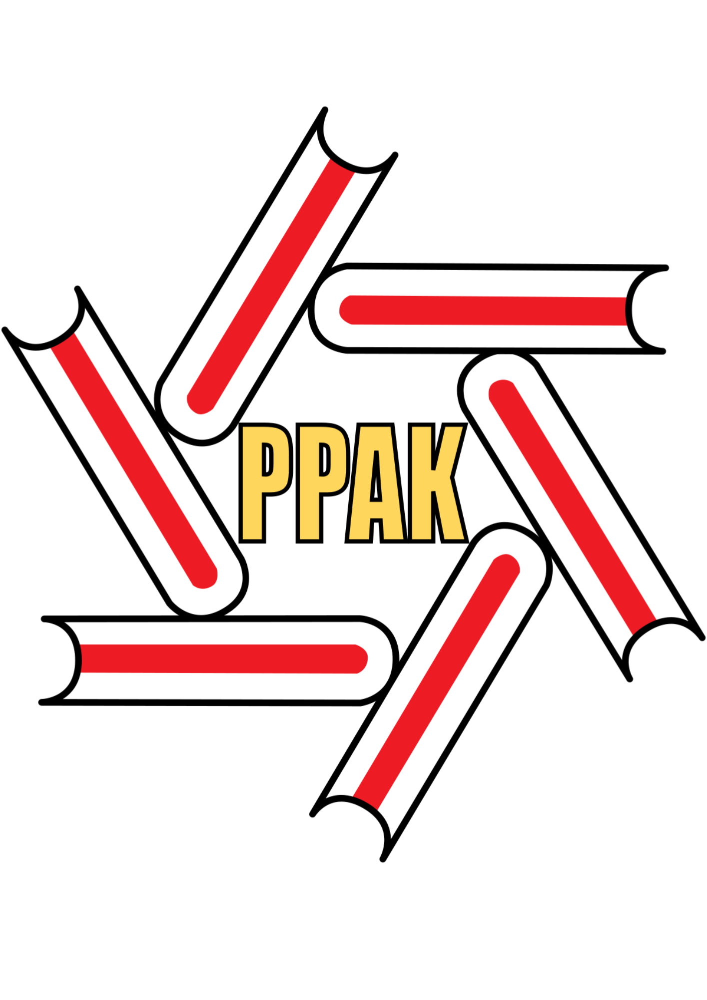
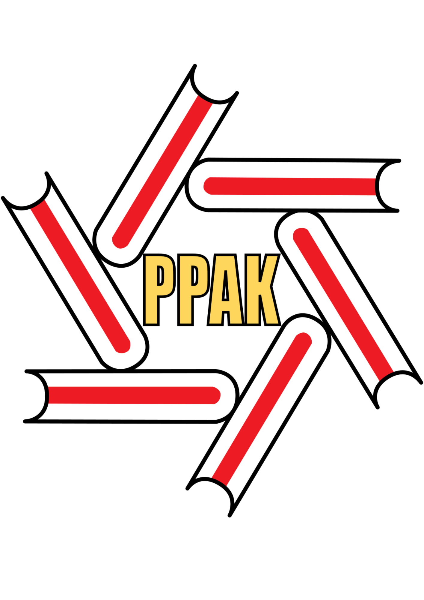
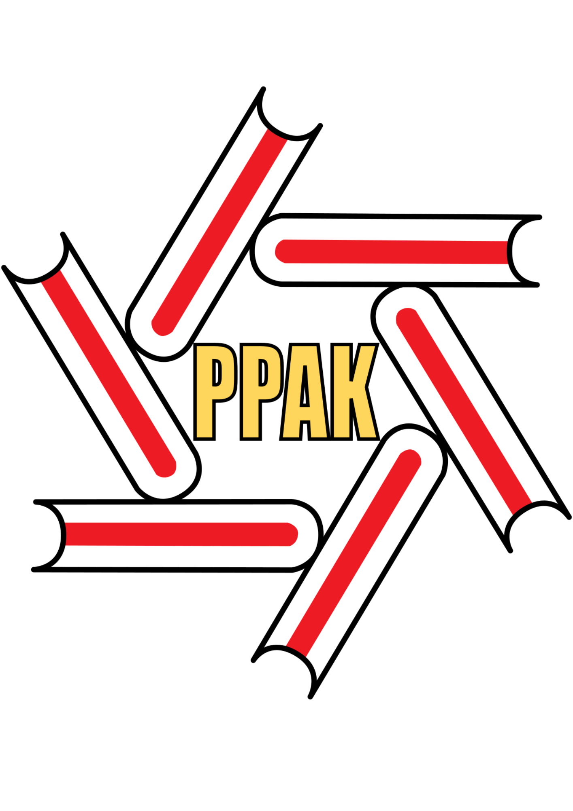
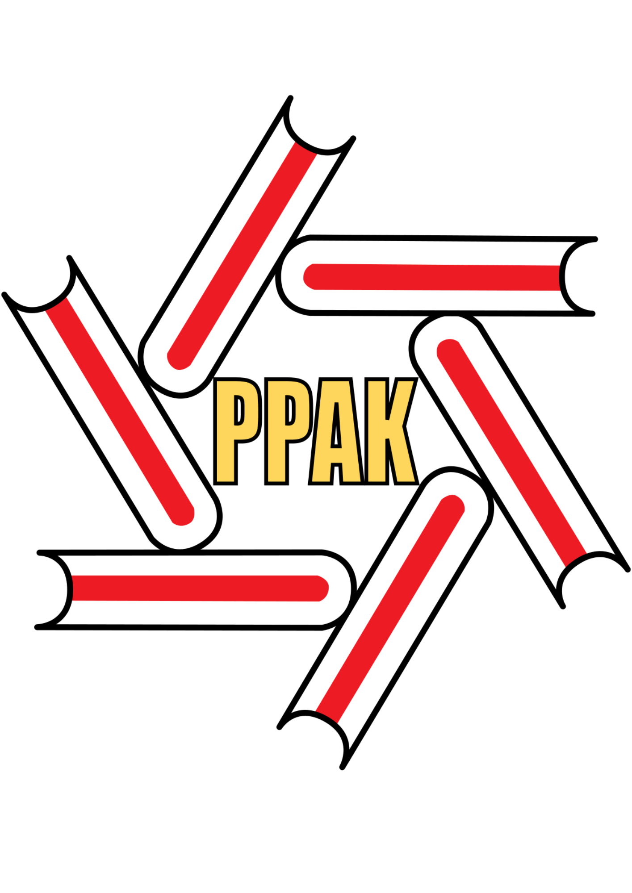

Kelantan Public Library Corporation starts with the name of the Carnegie Public Library founded in 1938 with the help of 1,000.00 pounds sterling from the Carnegie Foundation in New York and RM 2,500.00 from the State Government. The building is located at the Jalan Doktor, Kota Bharu. Committee members elected at that time consisted of Mr. A.C. Baker (British Adviser), Mr. Hal Gordon, Mr. C, Crae and YM Tengku Mahyideen. With the assistance of RM 1,000.00 per year received from the State Government from 1939 - 1946, however between the years 1947 to 1949, the library received only RM 500.00 from the State Government as an annual grant.
Beginning in 1963, the recovery measure has been undertaken by RM 2,500.00 annual allocations for administrative expenses and the purchase of reading materials library. While in 1964, the allocation has been increased to RM 5,000.00. Effective 1st January 1965, the library administration was taken over by the Carnegie Public Library Jumaah Trust. Member Jumaah efforts, the library was opened to the public on 1st. July 1967.
With the effectiveness of Enactment No. 14 In 1973, the Carnegie Public Library became known as Kelantan Public Library Corporation (Malay: Perbadanan Perpustakaan Awam Kelantan). At that time, the library only handled by three staff members, 2 low clerk and one office server. Until 1978, the contribution of the state government is RM 5,000.00 per year. However, the annual allocation increased from 1979 - 1982 at RM 35,000.00 per year and staff rises to 6 people.
In the Third Malaysia Plan, the Federal Government has approved an allocation of RM1.5 million for the construction of new buildings. 3 story high building with an area of 31,000 square feet on a site area of 1.13 acre located at Jalan Mahmood, Kota Bharu, Kelantan. The construction began in April 1981 and was completed in October 1982 at a cost of nearly RM 4 million. From 15th. February 1983, the library is open to the public and officially opened by His Royal Highness the Sultan of Kelantan in 1st April 1983.
Kelantan Public Library Corporation is designed to manage, maintain and expand the use of books and library materials to the community.
So far Kelantan Public Library Corporation has 7 branch libraries, 1 community library and 3 rural libraries. This development shows the improvement of Kelantan Public Library Corporation, yet the number of the branches still needs to be improved. Now, Kelantan Public Library Corporation in an effort to open two more branches in Machang and Tanah Merah.
Kelantan Public Library Corporation is divided into headquarters, branch library, community library and rural library.